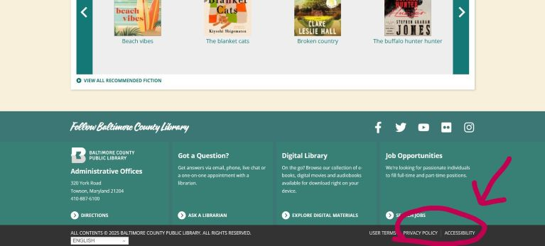
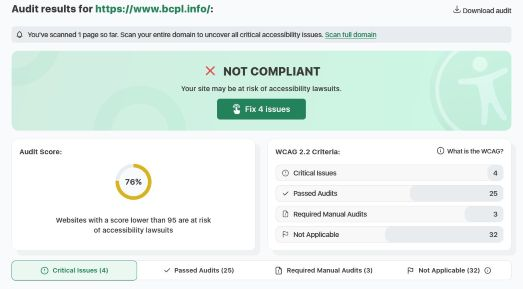

UI/UX Evaluation
Website: Baltimore County Public Library Home Page
- Website URL: BCPL
- Target audience: Someone looking for books or library events
- Website organization: This website has a linear organization and presents content like articles, events, and books each in their own row.
- CRAP Principle: Proximity is used to group similar content like the events and articles. Contrast is also used to make each section different visually.
Error: ARIA roles incorrectly applied
Error: Not enough space to click elements
Audit score: 76%
Issues:
- Ensure ARIA Roles Are Correctly Applied: Error on the carousel of books that makes it less accessible.
- Ensure touch target have sufficient size and space: 3 failing elements that do not meet the minimum touch target size, too small to click.
- One of those elements is the accessibility statement.
Site effectiveness
Overall the site is effective to use for most people. Most of its features make it user-friendly.
- No long blocks of text
- Easy to read fonts
- Contrast between blocks of content
- Mobile friendly
However, there are some accessibility issues that the audit found.
- Small clicking areas
- Incorrectly applied ARIA(Accessible Rich Internet Applications) roles